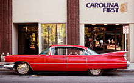
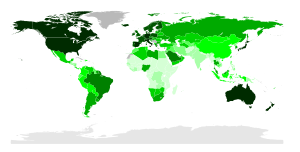

Автомоби́ль (от др.-греч. αὐτός — сам и лат. mobilis — подвижной, скорый) — моторное безрельсовое дорожное и/или внедорожное, чаще всего автономное, транспортное средство, используемое для перевозки людей и/или грузов, обычно имеющее не менее четырёх колёс.Основное назначение автомобиля заключается в совершении транспортной работы. Автомобильный транспорт в промышленно развитых странах занимает ведущее место по сравнению с другими видами транспорта по объёму перевозок пассажиров. Современный автомобиль состоит из 15—20 тысяч деталей, из которых 150—300 являются наиболее важными и требующими наибольших затрат в эксплуатации и обслуживании. Понятие включает: легковой автомобиль, грузовой автомобиль, автобус, троллейбус, бронетранспортёр, но не включает сельскохозяйственный трактор и мотоцикл.
Механическое транспортное средство, используемое обычно для перевозки по дорогам людей или грузов или для буксировки по дорогам транспортных средств, используемых для перевозки людей или грузов. Этот термин охватывает троллейбусы, то есть нерельсовые транспортные средства, соединённые с электрическим проводом; он не охватывает такие транспортные средства, как сельскохозяйственные тракторы, использование которых для перевозки людей или грузов является лишь вспомогательной функцией.
— Ст. 1, Конвенция о дорожном движении (Вена, 8 ноября 1968 года)
Любое механическое самоходное транспортное средство, используемое обычно для перевозки по дорогам людей или грузов или для буксировки по дорогам транспортных средств, используемых для перевозки людей или грузов; этот термин не включает сельскохозяйственные тракторы.
— Ст. 1, Европейское соглашение, касающееся работы экипажей транспортных средств, производящих международные автомобильные перевозки (ЕСТР) Женева, 1 июля 1970 года
Наземное транспортное средство, продвигаемое его собственными средствами, движущееся по крайней мере на четырёх колесах, не находящихся на одной линии, которые должны всегда быть в контакте с землёй; управление должно быть обеспечено по крайней мере двумя из колёс, и движение — по крайней мере двумя из колес.
— Международный спортивный кодекс ФИА, ст. 13

Kлассификация
Наиболее общими классификационными группами автомобилей являются:
-
легковые автомобили,
-
грузовые автомобили,
-
автобусы
-
троллейбусы,
-
автомобили специального назначения.
Для каждой из этих групп существует более подробная классификация.
Конструкция автомобиля
При всём разнообразии существующих автомобилей, у всех них имеются общие конструктивные элементы:
-
двигатель,
-
кузов, включая кабину, а также элементы, не вошедшие в другие системы, например, световые приборы, кондиционеры, ремни безопасности.
-
шасси, включая трансмиссию, движитель (обычно это колёса), системы управления, подвеску.

Производство автомобилей
Производитель автомобилей — автозавод, компания, фирма, занимающаяся разработкой, изготовлением или сборкой автомобилей. В начале XX века Oldsmobile совершил революцию в автомобильной промышленности, впервые применив конвейерную сборку и дав старт мировой массовой автомобилизации.
Крупнейшие компании-производители (на 2012 год):
-
General Motors (США + Великобритания + Австралия + Германия) — 9,03 млн.
-
Volkswagen Group (Германия + Франция + Италия + Испания + Великобритания) — 8,16 млн.
-
Toyota (Япония) — 8 млн.
-
Hyundai Motor (Южная Корея) — 6,59 млн шт.
-
Ford (США) — 6,3 млн шт.
-
Renault-Nissan (Япония + Франция + Южная Корея + Румыния + Россия) — 6,16 млн шт.